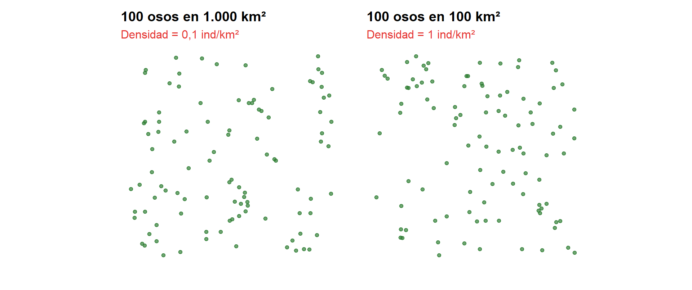
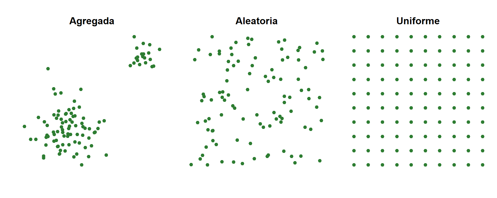
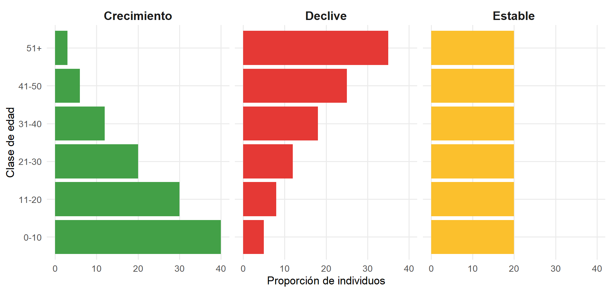
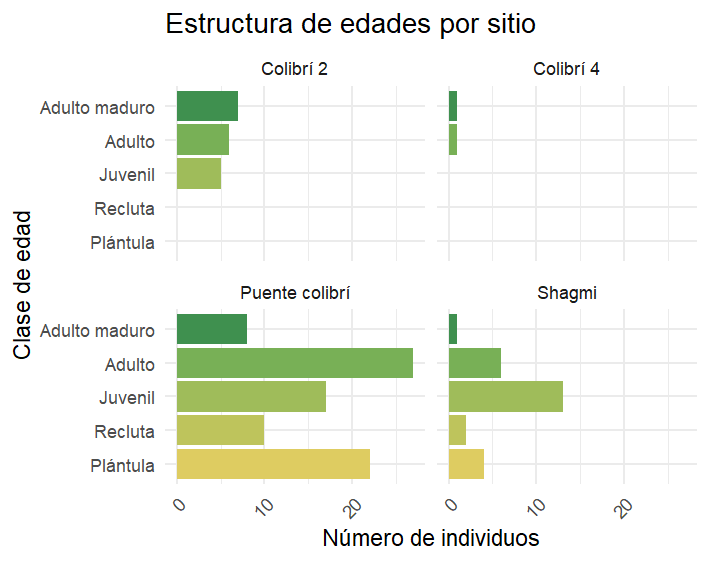
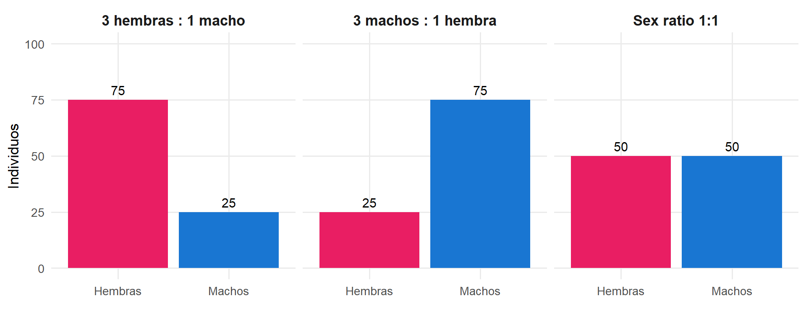
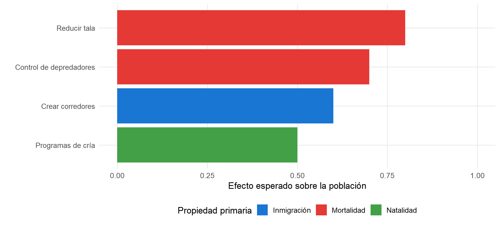

Clase 1.1 — Teoría y discusión
10/2026
Clase 1.1 — Propiedades de las poblaciones
Carlos Iván Espinosa Universidad Técnica Particular de Loja
Al finalizar esta sesión, podrás:
Una población es un conjunto de individuos de la misma especie que ocupan un mismo espacio en un mismo tiempo y que tienen potencial de reproducirse entre sí.
Los cuatro criterios parecen simples, pero cada uno esconde problemas.
¿Qué define a una especie?
Ejemplo local:
¿Qué significa “mismo espacio”?
El espacio lo define la especie, no el investigador.
Ejemplo: Una población de Cedrela montana puede abarcar varios fragmentos si hay flujo de polen. Una población de osos necesita cientos de km².
Las poblaciones cambian en el tiempo.
Una población de Cedrela montana que existía en la hoya de Loja hace 100 años no es la misma que la de hoy:
Pregunta: ¿Cuánto tiempo de coexistencia se necesita para hablar de “la misma población”?
El criterio más importante.
Dos grupos de individuos pueden estar en el mismo espacio y tiempo, pero si no pueden reproducirse entre ellos (barreras geográficas, conductuales o genéticas), no forman una población.
Lo que define a una población no es solo la coexistencia, sino la conexión reproductiva.
| Criterio | Pregunta clave |
|---|---|
| Misma especie | ¿Pueden reproducirse y dejar descendencia fértil? |
| Mismo espacio | ¿Comparten un área donde interactúan? |
| Mismo tiempo | ¿Coexisten en el mismo período? |
| Potencial reproductivo | ¿Hay conexión reproductiva real? |
Escenario:
Entre los fragmentos hay: áreas deforestadas, potreros, carreteras.
¿Son una población o tres?
La delimitación de una población es una decisión analítica, no un hecho natural.
Dividirse en tres grupos. Cada grupo analiza el caso y responde:
Grupo 1: ¿Qué información necesitarían para decidir si son una o tres poblaciones?
Grupo 2: ¿Cómo obtendrían esa información en el campo?
Grupo 3: Si tuvieran que decidir con información incompleta, ¿qué criterio usarían?
Puesta en común: 3 min por grupo.
| Propiedad | Individuo | Población |
|---|---|---|
| Edad | Edad cronológica | Estructura etaria |
| Sexo | Macho/hembra | Sex ratio |
| Tamaño | Peso, talla | Densidad |
| Nacimiento/muerte | Eventos únicos | Tasas poblacionales |
| Persistencia | Muere | Puede persistir siglos |
Las propiedades poblacionales no se reducen a la suma de las propiedades individuales.
Si un oso muere en el Podocarpus:
Una población puede:
Si en una población de Tremarctos ornatus mueren 2 individuos al año pero nacen 3, ¿la población crece o decrece?
Variantes:
Propiedades que solo existen al nivel poblacional:
Los vemos uno por uno.
Definición: número total de individuos de una población en un área determinada.
Dos formas:
Ejemplo local:
Problema práctico: no podemos censar; solo estimar a partir de muestras.
Definición: número de individuos por unidad de área.

Misma abundancia, densidad 10 veces mayor.
Tres patrones básicos:

Causas: competencia, territorialidad, dispersión limitada, heterogeneidad ambiental.
Se representa con pirámides poblacionales:

Caso 1 — Tremarctos ornatus en Podocarpus
Si encontramos pocos juveniles:
→ Problema de reclutamiento
Caso 2 — Cedrela montana en hoya de Loja
Si encontramos muchos adultos y ninguna plántula:
→ Regeneración fallida
La estructura etaria es una predicción del futuro, no solo un reflejo del pasado.

¿Que podemos decir de estas poblaciones?
Definición: proporción de machos y hembras.

Sex ratio efectiva: la de individuos que realmente se reproducen (más importante que la total).
Sobre abundancia:
En dos fragmentos de bosque encuentras 50 y 100 individuos de Cedrela montana. ¿Puedes concluir que el segundo es más abundante? ¿Qué información adicional necesitas?
Sobre distribución espacial:
¿Qué tipo de distribución esperarías en un árbol cuyas semillas caen al pie del parental? ¿Y en un ave territorial?
Sobre estructura etaria:
Si una población de cedros tiene muchos adultos y ningún juvenil, ¿qué pasará en 50 años?
Las primarias son las causas; las secundarias son los indicadores.
Si queremos conservar una población de cedros:
Si queremos aumentar osos en el Podocarpus:

¿Qué población de Loja te gustaría estudiar y qué propiedad medirías primero?
Piensen en una especie local (planta, ave, mamífero, insecto) y justifiquen su elección.
Gracias.